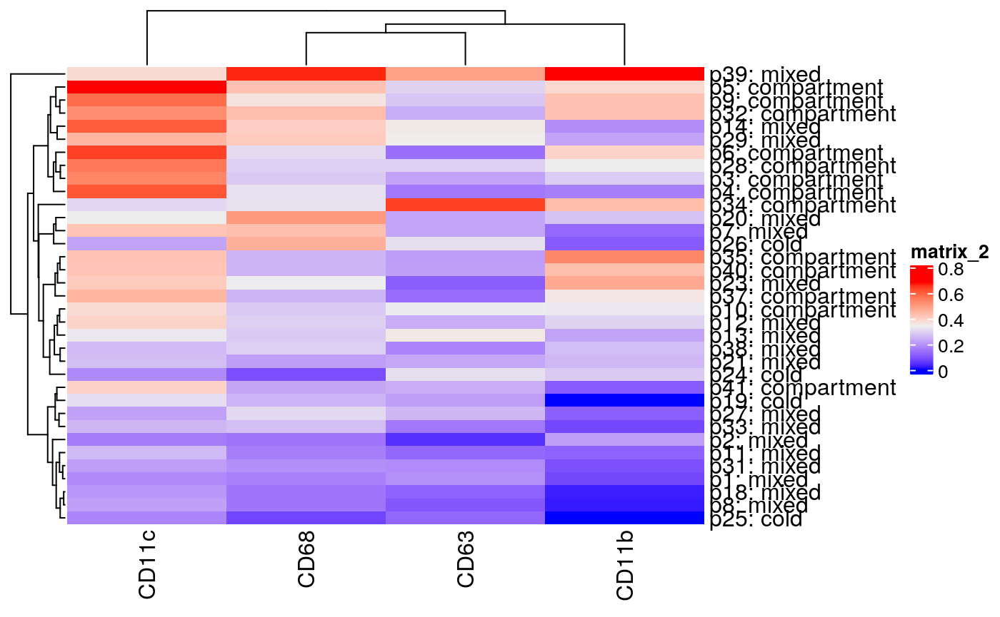

2. Tumor spatial autocorrelation and clinical prognosis
Lauren Hsu1
Source:vignettes/moran_clinical.Rmd
moran_clinical.RmdIntroduction
In this vignette, I examine the Moran’s index and its associations to the clinically prognostic tumor categories set forth by the authors in A Structured Tumor-Immune Microenvironment in Triple Negative Breast Cancer Revealed by Multiplexed Ion Beam Imaging.
Visit the BIRSBiointegration Hackathon page to read more about MIBI-TOF.
Loading data
resMoranTest.csv is the output from running compute_morans.R on the mibiTOF segmented image files, downloadable here: https://www.angelolab.com/mibi-data
A key component used in computing Moran’s I is the spatial weighting matrix (SWM). This can be formed from any number of ways, including by various distance metrics (e.g., Euclidean), by graphs, or any other ways of defining proximity in space.
We used SWM defined by Gabriel neighborhoods, which is a special case of a Delaunay graph (constructed from Voronoi tesselation). Delaunay graphs are constructed by drawing edges between all nodes with shared Voronoi faces (light blue edges and yellow nodes on the bottom right below). To then transform the graph into a Gabriel graph, edges are pruned if there are other points that lie within the smallest circle passing through those two points (e.g., in the red circles below), and edges are kept if not (e.g., in the green circle below).
patient_class.csv is included in the download from the link above. For each sample it contains the tumor classification as defined in the paper:
Moran plots
Computing p-values for 3-way ANOVA test of significance for Moran’s I on the dummy variables (cell type flags) and each protein expression level.
moran_aov <- moran[,-1] moran_aov$class <- as.factor(moran_aov$class) feats <- colnames(moran_aov)[-42] pvals <- data.frame(matrix(NA, ncol = 2, nrow = length(feats))) colnames(pvals) <- c('feat','aov_pval') rownames(pvals) <- feats for (feat in feats){ pvals[feat,] <- c(feat,summary(aov(moran_aov[,feat] ~ moran_aov[,'class']))[[1]][['Pr(>F)']][1]) } pvals$aov_pval <- as.numeric(pvals$aov_pval) pvals <- pvals[order(pvals$aov_pval),]
Individual ANOVA tests: (3 sets; for each, the other 2 groups are coded together as “other”)
moran_aov_sep <- moran[,-1] moran_aov_sep$class_cold <- as.factor(plyr::mapvalues(moran_aov_sep$class, from = c('mixed','compartment','cold'), to = c('other','other','cold'))) moran_aov_sep$class_mixed <- as.factor(plyr::mapvalues(moran_aov_sep$class, from = c('mixed','compartment','cold'), to = c('mixed','other','other'))) moran_aov_sep$class_comp <- as.factor(plyr::mapvalues(moran_aov_sep$class, from = c('mixed','compartment','cold'), to = c('other','compartment','other'))) feats <- colnames(moran_aov_sep)[c(-45:-42)] pvals_sep <- data.frame(matrix(NA, ncol = 4, nrow = length(feats))) colnames(pvals_sep) <- c('feat','test_cold','test_mixed','test_comp') rownames(pvals_sep) <- feats for (feat in feats){ pvals_sep[feat,] <- c(feat, summary(aov(moran_aov_sep[,feat] ~ moran_aov_sep[,'class_cold']))[[1]][['Pr(>F)']][1], summary(aov(moran_aov_sep[,feat] ~ moran_aov_sep[,'class_mixed']))[[1]][['Pr(>F)']][1], summary(aov(moran_aov_sep[,feat] ~ moran_aov_sep[,'class_comp']))[[1]][['Pr(>F)']][1]) } pvals_sep[rownames(pvals),]
## feat test_cold test_mixed
## tumorYN tumorYN 0.0341255910828547 0.00138488568677017
## CD45 CD45 0.00926810561241914 0.0172991570917716
## CD45RO CD45RO 0.153768342349517 0.000847841247869497
## CD11c CD11c 0.0359573772907523 0.0106009334311595
## CD4 CD4 0.272629983491842 0.000990523269478657
## Beta.catenin Beta.catenin 0.441713353948455 0.000633966876022113
## CSF.1R CSF.1R 0.0260297339236067 0.0734092694590058
## CD3 CD3 0.231378899113043 0.00606288943242979
## Pan.Keratin Pan.Keratin 0.280025985796279 0.00733873289803587
## CD8 CD8 0.00881687281664925 0.247950391012
## H3K9ac H3K9ac 0.00768400905209691 0.00332980957925492
## HLA.DR HLA.DR 0.721556225584227 0.00268378125355884
## PD.L1 PD.L1 0.00189108015255096 0.973256320059549
## PD1 PD1 0.396163920509005 0.010541639052546
## Keratin6 Keratin6 0.191068629524341 0.0324436596735067
## CD11b CD11b 0.0507890928320497 0.208960309971905
## Vimentin Vimentin 0.157054785990441 0.00337777238568537
## CD20 CD20 0.343906470528576 0.0202168392251092
## cellSize cellSize 0.495024045383168 0.0224414424296167
## CD16 CD16 0.0203026161959533 0.643303061732047
## CD163 CD163 0.774417327487516 0.0200755355846754
## CD138 CD138 0.0321922296600026 0.0670285683964105
## HLA_Class_1 HLA_Class_1 0.575185456376524 0.0152914905787428
## phospho.S6 phospho.S6 0.356008033837109 0.0204491896010629
## H3K27me3 H3K27me3 0.573476548037953 0.0252502986964708
## Keratin17 Keratin17 0.48333491261473 0.0264463023616048
## p53 p53 0.02920027513594 0.621112186580165
## CD209 CD209 0.075665916309574 0.594684205683068
## OX40 OX40 0.407556206139695 0.122410375469582
## CD31 CD31 0.596672323390244 0.0946218569210861
## Lag3 Lag3 0.972418703053599 0.0448862813916235
## B7H3 B7H3 0.0524360558556027 0.387246616574369
## Ki67 Ki67 0.928414429412843 0.128460352975178
## MPO MPO 0.230393392178348 0.587012118460728
## IDO IDO 0.980359448027047 0.177751252998018
## CD68 CD68 0.200304931399538 0.799693019882516
## SMA SMA 0.381927436545846 0.27226501530817
## FoxP3 FoxP3 0.293454923929008 0.450073122721021
## CD63 CD63 0.899182243125353 0.319317727598852
## CD56 CD56 0.325289880739089 0.626169875408483
## EGFR EGFR 0.761672949319811 0.851555474947503
## test_comp
## tumorYN 5.01078563984276e-08
## CD45 2.97989056262974e-06
## CD45RO 1.13364321116951e-06
## CD11c 8.49490976222607e-06
## CD4 8.18904341534503e-06
## Beta.catenin 1.84599969895042e-05
## CSF.1R 0.000411883978663573
## CD3 0.000110353888557948
## Pan.Keratin 0.00022813542098335
## CD8 0.00252248271314348
## H3K9ac 0.232016396221856
## HLA.DR 0.000619848715663221
## PD.L1 0.0445801939992952
## PD1 0.00083481369919345
## Keratin6 0.00124082021354464
## CD11b 0.00749451883529667
## Vimentin 0.0473951787483856
## CD20 0.00352866245988334
## cellSize 0.00379811596789498
## CD16 0.0448972617394975
## CD163 0.0109454363422921
## CD138 0.627399123706833
## HLA_Class_1 0.0356832322421822
## phospho.S6 0.0822829730944162
## H3K27me3 0.0560420017774816
## Keratin17 0.0726084698341079
## p53 0.373008733951914
## CD209 0.105807280220194
## OX40 0.0338333250955215
## CD31 0.0348130551865471
## Lag3 0.0408842537259478
## B7H3 0.458033396966791
## Ki67 0.0979176465990246
## MPO 0.173574551750504
## IDO 0.166727117095437
## CD68 0.567440678482007
## SMA 0.579516983961658
## FoxP3 0.867616415535372
## CD63 0.344490529642514
## CD56 0.980073086236272
## EGFR 0.693654383426714Visualizing Moran’s I across groups
Comparing Moran’s I scores across the clinical prognosis categories on the tumor cell dummy variable:
(Moran’s I is computed where the measurement in each cell is 1 or 0, for whether is is or is not a tumor cell, providing a measure of spatial autocorrelation of tumor cells within the sample.)
ggplot(moran, aes(x=class, y=tumorYN)) + geom_boxplot(aes(fill = class))
Here, we can see the differences when visualized alongsidem images of the tumors (tumor images as published by Keren et al. 2018)
Comparing all attributes:
(Each panel corresponds to a given attribute, mostly proteins, and shows the differences in spatial autocorrelation, as quantified with Moran’s I, across the clinical groups. Panels are sorted by p-value of 3 way anova, and include *s to indicate their significance level in the “each vs rest” ANOVA tests.)
moran_melt <- melt(moran,id.vars = c('sample','class')) moran_melt$variable <- factor(moran_melt$variable, levels = rownames(pvals)) # sort panels by 3way anova pval mm <- ggplot(moran_melt, aes(x=class, y=value)) + geom_boxplot(aes(fill = class)) + facet_wrap(. ~ variable, nrow = 3) + stat_compare_means(method = "anova", label.y = 1.1, size = 3) + # Add global p-value stat_compare_means(label = "p.signif", method = "t.test", ref.group = ".all.", hide.ns = TRUE, color = 'red', size = 3) + theme(axis.text.x=element_blank(), axis.ticks.x=element_blank())

Defining some proteins that may be interesting to consider together, due to related cell types / function:
immune_subset <-c('CD45','CD45RO', 'CD3','CD8', 'CD16','CD163','HLA.DR') immune_subset2 <-c('CD45','CD45RO', 'CD3','CD8', 'CD16','CD163','HLA.DR', 'CD11c') monocyte_subset <- c('CD11b','CD11c','CD68','CD63') im_reg_subset <- c('PD1','PD.L1') tum_subset <- c('tumorYN', 'Beta.catenin', 'Pan.Keratin', 'Keratin6', 'EGFR', 'p53') lymphocytes <- c('CD45','CD3','CD8','CD4','CD20','CD45RO','CD56','CD16','CD138') antigen_prez <- c('HLA.DR','HLA_Class_1', 'CD209')
Examining a few of the protein subsets
for(cur_sub in list(immune_subset, monocyte_subset, tum_subset, lymphocytes, antigen_prez)){ moran_melt <- melt(moran[,c('sample','class',cur_sub)],id.vars = c('sample','class')) moran_melt$variable <- factor(moran_melt$variable, levels = rownames(pvals)[rownames(pvals) %in% cur_sub]) # sort panels by 3way anova pval ggplot(moran_melt, aes(x=class, y=value)) + geom_boxplot(aes(fill = class)) + facet_wrap(. ~ variable, ncol = 5) + stat_compare_means(method = "anova", label.y = 1.1, size = 3) + # Add global p-value stat_compare_means(label = "p.signif", method = "t.test", ref.group = ".all.", hide.ns = TRUE, color = 'red', size = 5) + theme(axis.text.x=element_blank(), axis.ticks.x=element_blank()) moranHM <- moran[,-c(1,43)] moranHM <- moranHM[,cur_sub] rownames(moranHM) <- paste(moran$sample,moran$class,sep = ': ') show(ComplexHeatmap::Heatmap(moranHM)) }
## Warning: The input is a data frame, convert it to the matrix.
## Warning: The input is a data frame, convert it to the matrix.## Warning: The input is a data frame, convert it to the matrix.
## Warning: The input is a data frame, convert it to the matrix.## Warning: The input is a data frame, convert it to the matrix.Additional visualizations
Biplot: samples labeled by tumor class and proteins
moran_bip <- corral::na2zero(moran_aov[,-42]) rownames(moran_bip) <- paste(moran$sample,moran$class,sep = ': ') prc_moran <- prcomp(moran_bip) biplot(prc_moran)
Heatmap of the Moran’s I values per protein, per sample.
moranHM <- moran[,-c(1,43)] rownames(moranHM) <- paste(moran$sample,moran$class,sep = ': ') ComplexHeatmap::Heatmap(moranHM)
## Warning: The input is a data frame, convert it to the matrix.Harvard School of Public Health↩︎